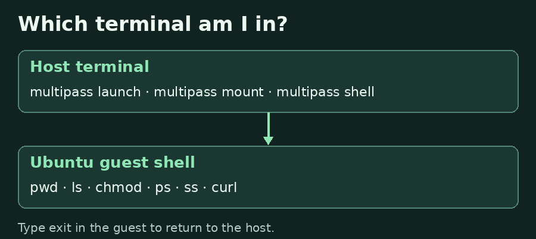

Linux for Engineers
A customer says a service has started but its health check fails. You’ll reproduce that locally, work out what Linux can tell you about it and show when it’s healthy again.
By the end: You can distinguish your laptop from an Ubuntu VM, find files and diagnose permissions, inspect a process and listening port, then verify a service with a small Bash script.
Jump to the incident lab · Try the tricky questions
Start an Ubuntu VM
Your host is the computer you sit at. Multipass creates a virtual machine, or guest, that runs its own Ubuntu system. A server can have a different filesystem, users and running programs from your laptop. Keeping track of which system you’re on is your first debugging habit.

Install Multipass using Canonical’s instructions for your host OS. On a managed device, use a VM or Linux environment your organization provides if you lack installation or virtualization permissions.
On the host: Open a fresh terminal and run:
multipass version
multipass find
multipass launch --name linuxbox --cpus 2 --memory 2G --disk 15G 24.04
multipass list
multipass shell linuxboxversion checks that the client is available. find lists images. launch creates an Ubuntu 24.04 guest named linuxbox with two virtual CPUs, 2 GB of guest RAM and a 15 GB virtual disk. list shows the instance state. shell takes you into it. If linuxbox is already your practice VM, start it with multipass start linuxbox, then open its shell.
Inside Ubuntu:
hostname
whoami
pwd
grep '^PRETTY_NAME=' /etc/os-releaseCheckpoint. The release line identifies Ubuntu 24.04. whoami identifies your user and pwd shows the guest’s current directory. Type exit to return to your host. Your prompt and exact version can differ from the lecture.
Share a practice file
A mount lets the guest access a host folder at a path inside Ubuntu. A change through a writable mount can affect the host copy, so use a dedicated practice folder with a harmless hello.txt in it.
On the host: Create a folder named linux-class in your home directory and save a file called hello.txt. Choose your host’s mount command.
Windows PowerShell
multipass mount "$HOME\linux-class" linuxbox:/home/ubuntu/class-filesIf Windows reports that mounts are disabled, transfer the single file instead. Open Canonical’s mounts setting reference if you need a writable share. Enabling that setting allows privileged access to the host folder, so the lab can use a transfer instead.
multipass exec linuxbox -- mkdir -p /home/ubuntu/class-files
multipass transfer "$HOME\linux-class\hello.txt" linuxbox:/home/ubuntu/class-files/hello.txtmacOS or Linux
multipass mount "$HOME/linux-class" linuxbox:/home/ubuntu/class-filesInside Ubuntu: Enter with multipass shell linuxbox first, then run:
ls -l /home/ubuntu/class-files
cat /home/ubuntu/class-files/hello.txtCheckpoint. You see the text you saved. If you used transfer, Ubuntu has a copy and edits stay in the guest. If you used a mount, the two systems see the same shared folder. Run the remaining exercises inside Ubuntu, in the guest’s own home folder.
Navigate and inspect files
An absolute path begins at /, such as /etc/os-release. A relative path begins in the current directory. . means here, .. is the parent directory and ~ expands to your home folder. Linux filenames are usually case-sensitive.
| Path | What you typically find |
|---|---|
/home | Regular users’ home directories. |
/etc | System and application configuration. |
/var/log | Many system logs. Some services write to the system journal. |
/tmp and /usr/bin | Temporary files and commonly installed executables, respectively. |
Create a small directory that you can inspect and later serve over a local HTTP port.
mkdir -p "$HOME/fde-linux-lab/site"
cd "$HOME/fde-linux-lab"
printf '%s\n' 'ready' > site/health.txt
pwd
ls -la site
find . -maxdepth 2 -type f -name '*.txt'
cat site/health.txtmkdir -pcreates the parent directories as needed.cdchanges your current directory.printfwrites the word and a newline.>creates or replaces the file.ls -lashows details and hidden names.findlooks up to two levels below here for regular files matching the quoted pattern.catprints the file. Expectready.
Read users and permissions
Linux checks which user a process runs as and which groups it belongs to. Each file has an owner, a group and separate permissions for owner, group and others. Read r, write w and execute x correspond to 4, 2 and 1.
whoami
id
getent passwd "$(whoami)"
getent group "$(id -gn)"
ls -ld site
ls -l site/health.txt
chmod 640 site/health.txt
stat -c '%A %a %U %G %n' site/health.txtid shows the user and group IDs. getent queries the account and group records that the system knows about. ls -ld inspects the directory itself. chmod 640 gives the file owner read and write (6), the group read (4) and others no access (0). The final line starts with -rw-r----- 640, followed by your user, group and filename.
A directory’s x lets you traverse it to reach a name inside. A readable file can still be inaccessible if a parent directory blocks traversal. chmod changes permission bits. chown changes the owner or group and may require an administrator.
Practice user and group management in this VM
Use a fresh practice VM where the fde-app account and group don’t exist. Observe the account without giving it administrative access.
sudo groupadd fde-app
sudo useradd --no-create-home --gid fde-app fde-app
getent passwd fde-app
getent group fde-app
sudo -u fde-app idThe first two commands create the group and user. getent shows their records. sudo -u fde-app id runs only id under that identity so you can verify it.
Read processes, ports and logs
A process is a running program identified by a PID. Its PPID identifies its parent. A listening socket is a program waiting for traffic on an address and port. A process can exist while its expected socket or route is missing.
In Ubuntu, check for Python and curl, which the lab uses to start a local server and send it an HTTP request. If one is missing, install it in the guest.
command -v python3
command -v curlInstall a missing lab command
sudo apt update
sudo apt install python3 curlThe first command refreshes package metadata. The second installs the tools. Run both in Ubuntu.
Start your practice service. Use ss first to check port 8765. If another process already owns it, leave it running and choose a free port, then use the same port throughout.
ss -ltn 'sport = :8765'If that lists no listening row, start the service and save its PID in the same Ubuntu terminal.
nohup python3 -u -m http.server 8765 --bind 127.0.0.1 --directory "$PWD/site" > server.log 2>&1 < /dev/null &
server_pid=$!--bind 127.0.0.1 listens only inside the guest. --directory points at the files you prepared. > server.log 2>&1 puts normal output and errors into one log. & runs the command in the background, $! is its PID and nohup keeps the command from receiving the usual terminal hangup behavior. This setup is for practice. A managed service can handle restarts and structured logs.
ps -p "$server_pid" -o pid,ppid,stat,args
ss -ltnp 'sport = :8765'
curl --max-time 3 -fsS http://127.0.0.1:8765/health.txt
tail -n 5 server.logExample result from the Linux test run (PID and timestamps vary).
LISTEN 0 0 127.0.0.1:8765 0.0.0.0:* users:(("python3",pid=22,fd=3))
ready
127.0.0.1 - - [...] "GET /health.txt HTTP/1.1" 200 -Checkpoint. ps shows your server, ss shows the local listener and curl prints ready. If the server is still starting, repeat the check after it shows a listener. The log records the request and its HTTP status. Keep this server running for the next two sections.
Read the wider process and socket views
ps -ef -o pid,ppid,cmd
ps aux
pstree -p
top
ss -tulnpps gives a snapshot and pstree groups processes by parent. top refreshes the view continuously. Press q to exit. htop is an optional interactive tool if installed. In ss, -t and -u choose TCP and UDP, -l shows listening sockets, -n keeps numeric addresses and -p requests process details, when you have permission to see them.
Write a Bash check and pass configuration
A script turns the manual check into something another engineer can rerun. A shell variable belongs to its shell. Export it or put it before a command to pass it to that command’s environment. A child process can inherit those values when it starts.
In ~/fde-linux-lab, paste this whole block to create check.sh.
cat > check.sh <<'BASH'
#!/usr/bin/env bash
url="${HEALTH_URL:-http://127.0.0.1:8765/health.txt}"
if ! body=$(curl --max-time 3 -fsS "$url"); then
printf '%s\n' 'Health check failed' >&2
exit 1
fi
if [[ "$body" != ready ]]; then
printf 'Unexpected body: %s\n' "$body" >&2
exit 1
fi
printf '%s\n' 'Health check passed'
BASH- The quoted
BASHdelimiter writes the lines into a file without expanding variables as you create it. The first line inside the file declares Bash as the interpreter for a direct execution. ${HEALTH_URL:-…}uses the local default when the environment variable is empty or absent.curlhas a three-second time limit and-ftreats HTTP errors such as 404 as failures. The first branch handles a failed request and writes its own message to standard error via>&2.- The second branch checks the response body after the command succeeded. Both failures exit with status 1. A successful run prints the final line and exits with status 0.
Read check.sh line by line
#!/usr/bin/env bashChoose Bash when this executable is run directly.
url="${HEALTH_URL:-http://127.0.0.1:8765/health.txt}"Read HEALTH_URL or use the default lab address.
if ! body=$(curl --max-time 3 -fsS "$url"); thenCapture the response body. Enter the branch if the request fails.
printf '%s\n' 'Health check failed' >&2Send the failure message to standard error.
exit 1Stop and report a failed check.
fiClose the request failure branch.
if [[ "$body" != ready ]]; thenEnter this branch if the response is anything other than ready.
printf 'Unexpected body: %s\n' "$body" >&2Print what the server returned so you have evidence to debug.
exit 1Stop with a failing status even though the HTTP request succeeded.
fiClose the body validation branch.
printf '%s\n' 'Health check passed'Print the success message. The command succeeds, so the script finishes with status zero.
bash check.sh
HEALTH_URL=http://127.0.0.1:8765/missing.txt bash check.sh
printf 'Exit status: %s\n' "$?"Checkpoint. The first command prints Health check passed. The second reports a 404 and Health check failed. The last line prints Exit status: 1 because it reads the result immediately after the failed check. If you changed the lab port, use the correct HEALTH_URL on each invocation.
Lab: Diagnose an unhealthy service
Leave the server running. Your customer says the service is up but the health check is failing. Work from evidence. Check the process first, then the listener, then the HTTP response and finally the file or configuration. Before opening each answer, predict what should remain healthy and what should fail.
Case 1 · The process listens but the file is missing
mv site/health.txt site/health.backup
ss -ltn 'sport = :8765'
bash check.sh
tail -n 3 server.log
mv site/health.backup site/health.txt
bash check.shmv hides the expected path without stopping the server. The listener remains. The failed check and log show 404. Restore the original filename and rerun the check. The service should report healthy again.
Case 2 · The file exists but the response is wrong
printf '%s\n' 'starting' > site/health.txt
curl --max-time 3 -sS -w 'HTTP %{http_code}\n' http://127.0.0.1:8765/health.txt
bash check.sh
printf '%s\n' 'ready' > site/health.txt
bash check.shThe file is readable and HTTP returns 200, but the response says starting. The script rejects that body. Restore the expected value and confirm Health check passed.
Case 3 · The probe is pointed at the wrong URL
HEALTH_URL=http://127.0.0.1:8765/wrong bash check.sh
printf 'Exit status: %s\n' "$?"
HEALTH_URL=http://127.0.0.1:8765/health.txt bash check.shThe environment override changes where this invocation looks. The first probe fails with status 1. Correct the URL and rerun it. The process and file need no changes.
Case 4 · The file exists but the service can’t read it
Run this as the ordinary guest user who started the practice server.
chmod 000 site/health.txt
stat -c '%A %a %n' site/health.txt
bash check.sh
chmod 640 site/health.txt
bash check.shThe first command removes read access. The file still exists, but this practice server returns 404 when it cannot open it. Restoring mode 640 gives the server’s user read access and the check passes again. Compare stat with ps -p "$server_pid" -o user,args before changing permissions in a real incident.
Try without the solution. A teammate wants to start a second copy at the same address and port. Explain what you would measure first, how you’d identify the existing process and what would prove that a second instance can run independently. Use a different free port for the second copy.
Show how to verify the port conflict
ss -ltnp 'sport = :8765'
python3 -m http.server 8765 --bind 127.0.0.1 --directory "$PWD/site"With the first server still bound to that port, the second command fails with Address already in use. The first listener and its health response still work. Verify a different free port with ss, run the second instance bound to that port and probe both addresses separately.
Tricky Linux questions
Predict first. Use the scratch VM to verify when a command is provided.
Why can cat fail even when the file is readable?
Every parent directory must permit traversal for the user running the command. Check the directory chain and the process identity before changing file permissions.
A service appears in ps. Is its HTTP route healthy?
A process listing confirms a process exists. Use ss to check the expected listener, then curl to check the route and response.
Why did a second write remove the first log line?
The > operator truncates an existing file before writing. Use >> to append when history should remain.
Why did a Bash script ignore a variable I just set?
A script started in a new process receives exported variables. Use export NAME=value or a one-command environment assignment like NAME=value bash check.sh.
What is the difference between a refused connection and HTTP 404?
A refused connection failed before an HTTP response. A 404 means an HTTP server responded but could not find the requested route or file.
Why did editing Ubuntu’s shared hello.txt change the laptop copy?
A writable mount exposes the same host folder to both systems. A file sent with transfer is a separate copy.
Hand over what you found
Write four lines for the next engineer. State the observed symptom, the evidence that isolated it, what you changed and which command proved recovery. For the missing file case, include the original 404 and the successful rerun of bash check.sh.
When finished, stop only the practice process you started. Use the same guest terminal where server_pid was set and verify the command before sending the signal. Proceed only if the listing matches your practice HTTP server.
ps -p "$server_pid" -o pid,argskill "$server_pid"
wait "$server_pid" 2>/dev/null || true
ss -ltn 'sport = :8765'
exitBack on the host, unmount if you mounted a folder, then stop the guest. stop lets you start the same guest later and keeps its disk.
multipass unmount linuxbox:/home/ubuntu/class-files
multipass stop linuxboxLecture and reference notes
November 15 lecture checkpoints: VM and Multipass setup from about 01:06, filesystem navigation around 01:53, users and permissions from about 02:18, processes and sockets around 03:18 and background jobs around 03:34. The Bash health check and incident lab connect these concepts in one exercise.